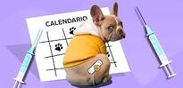

La mayoría de las personas saben que el chocolate es peligroso para las mascotas. Tiene un compuesto llamado teobromina, y también con una dosis suficientemente grande este producto químico puede crear convulsiones, coma, y también la muerte en los perros. El chocolate negro tiene más teobromina que el chocolate con leche. El café tiene la misma sustancia química y también es venenoso para los perros. Otros alimentos peligrosos para los animales domésticos son las pasas y las uvas (ambas pueden causar insuficiencia renal), las nueces de macadamia (causan debilidad, vómitos y aumento de la temperatura), el agente edulcorante xilitol (la ingestión de periodontal sin azúcar causa caídas extremas y mortales de azúcar en la sangre y también insuficiencia hepática), el ajo así como las cebollas (cantidades suficientes pueden desencadenar anemia), así como los alimentos que son extremadamente altos en grasa, como la salchicha (puede desencadenar un ataque extremo de pancreatitis).
Los perros disfrutan de un poco de verde de vez en cuando. Sobre todo en primavera, cuando el césped es nuevo y maravilloso, los perros se sienten atraídos por comerlo. Aunque no entendemos del todo las razones por las que los perros domésticos comen hierba, es probable que la ingestión de un porcentaje sea habitual, y tampoco es intrínsecamente perjudicial.
Si su perro consume hierba en exceso, y especialmente si vomita después, es probable que haya un problema subyacente. Los perros que consumen césped a menudo requieren ser tomado un vistazo, y también necesitan exámenes de análisis para identificar si hay un problema subyacente, como el dolor intestinal, que está estimulando estas acciones. Un perro que consume una cantidad considerable de hierba puede tener un problema grave en un futuro porque es difícil para ellos para digerir grandes cantidades.

La mayoría de los veterinarios tienen en cuenta el modo de vida del perro y el riesgo de enfermedad antes de recomendar las vacunas. «Las vacunas principales para los cachorros son la parvovirosis, el moquillo y la rabia. Las inyecciones de parvo y moquillo suelen combinarse en una sola inyección.
Los cachorros jóvenes necesitan una colección de 3 de estas vacunas para estar totalmente protegidos, y también se suelen administrar a las 8, 12 y 16 semanas de edad.
La vacunación contra la rabia también es fundamental, y en todo el territorio español se exige por ley. Los cachorros necesitan una vacuna contra la rabia a las 16 semanas.
Dependiendo del lugar donde viva el perro, los veterinarios suelen aconsejar la vacunación contra la leptosporosis. Se arrastra en el pis de los animales salvajes, y también se está convirtiendo en algo cada vez más común.
Los cachorros deben ser vacunados dos veces para estar protegidos, generalmente a las 12 y 16 semanas.
A pesar de que la traqueobronquitis transmisible (también conocida como «tos de las perreras«) no es prácticamente nunca una enfermedad grave, muchas guarderías y pensiones la necesitan y, dependiendo de la exposición de la mascota a otros animales, los veterinarios suelen recomendarla. Hay muchos tipos diferentes de esta vacuna -inyectable, oral e intranasal- y el programa de vacunación varía en función del tipo que prefiera el veterinario.
Aunque no todas las situaciones de «ojos rojos» son el indicador de una enfermedad grave en las mascotas, conllevan la suficiente preocupación como para requerir una visita al veterinario para asegurarse de que no lo es. El glaucoma, que es una enfermedad que desencadena un aumento de la tensión en el interior del ojo, suele comenzar con un simple dolor en la esclerótica (la parte blanca del ojo). El glaucoma puede avanzar rápidamente, y no sólo es extremadamente insoportable, sino que si no se atiende puede producirse la pérdida de visión.
La mayor parte de las inflamaciones de los ojos se deben a la conjuntivitis fácil, o a la inflamación y/o infección del saco que rodea al ojo. Generalmente, esto tiene lugar debido a la inflamación por un irritante transportado por el aire, o un contaminante como el humo. Los animales domésticos también pueden contagiar la conjuntivitis microbiana entre ellos.